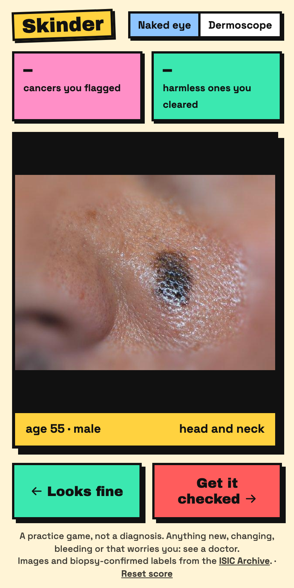
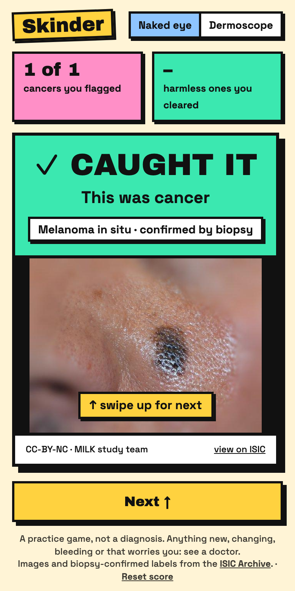
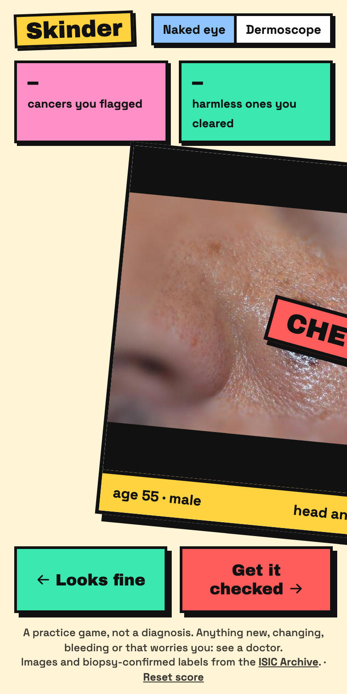

Worth a Look shows you real photos of moles and skin growths whose diagnosis is known, nearly all from a biopsy. You swipe left if it looks fine and right if you'd get it checked, and the real answer appears straight away. After a few hundred swipes you start to see what doctors look for.


Skin cancer is far easier to treat when it's found early, and it is usually found by someone looking at skin. People miss a lot on their own. One study puts it at about half of all melanomas, and the ones people miss are mostly on the scalp, head and neck, which are hard to see in a mirror.
Barbers, hairdressers and estheticians look at exactly those places, up close, every few weeks. Many already keep an eye out. Few have ever been taught what to look for, and most say they would like to learn.
Worth a Look is free practice for them, and for anyone else who wants to get better at noticing. The research behind that is below. Every number links to its study.
of scalp and neck melanomas treated at Emory's cancer center in Atlanta were first spotted by a hairdresser. Those patients were younger, 53 against 66, and their melanomas were more often caught at an early stage: 67% against 45%.
Lovasik et al., Annals of Surgical Oncology, 2016of 203 hair professionals in Houston had checked more than half their customers' scalps for suspicious spots in the past month. 29% did the same for necks, and 15% for faces.
Bailey et al., Archives of Dermatology, 2011of melanomas go unnoticed by the person themselves, mostly ones on the scalp, head and neck. A study of cosmetology students starts from this figure.
Radisic et al., Journal of Cosmetic Dermatology, 2020of those 203 Houston hair professionals had any formal skin cancer education. 49% were very or extremely interested in a training program.
Bailey et al., Archives of Dermatology, 2011of 37 UK hairdressers and barbers had any skin cancer awareness training. 92% said they would like some, or might.
Skin Health and Disease, 2025of 194 cosmetology students at seven Florida schools felt underprepared to check clients for unusual spots before a single skin cancer talk, and after it.
Radisic et al., Journal of Cosmetic Dermatology, 2020hair, skin and massage professionals in Oregon took an online course. Afterwards their level of concern for each spot matched doctors' ratings significantly better, and they felt more comfortable talking to clients about it.
Diehl et al., Journal of Cosmetic Dermatology, 2024estheticians took part in a training study. Those who had been on a skin cancer course before were more likely to suggest a client see a doctor, and after the training most felt very comfortable doing so.
Walker et al., Dermatology, 2024of 100 hairdressers felt very confident spotting melanoma after a 5-minute video. Correct answers on the warning signs rose from 59% to 71%.
Black et al., JAMA Dermatology, 2018correct for 36 medical students who practiced with a swipe app on photos of real spots, against 75% → 78% for students taught the usual way.
Lacy et al., JAMA Dermatology, 2018A review of 16 studies reached the same conclusion: these professionals are open to looking at the skin they already work on, and willing to send clients to a doctor when something looks wrong (Pearlman et al., 2021). Training programs already exist, among them Stylists Saving Lives, the Hairstylist Melanoma Challenge and a James Cook University program in Australia.
What was missing is a free place to practice on hundreds of real cases with a known answer, a few minutes at a time, between clients. Courses teach the warning signs. Worth a Look lets you see them over and over until you start to recognize them.
The job is to notice and suggest a doctor, never to diagnose. Head & neck mode shows a sentence for that after every cancer, such as: "I noticed a spot on your neck. Might be worth having a doctor look at it."
One gap: the archive has very few scalp photos. Most head and neck photos are of the face, neck and ears.
Each card is one real spot, with the person's age, sex and where it was on the body. Doctors use those too.
Left means it looks fine. Right means you'd get it checked. Buttons and arrow keys work as well.
The answer appears with the diagnosis and, for common ones, what that diagnosis usually looks like. Every 20 photos you get a score. A separate 20-photo skill check shows how much you've improved.

Every photo comes from the ISIC Archive, a public collection of skin images run by the International Skin Imaging Collaboration. Every cancer in Worth a Look was confirmed by biopsy: a doctor removed the spot and a lab examined it under a microscope. So was almost every harmless spot. Everyday photos of harmless spots with a biopsy are scarce, so the game adds 406 that several dermatologists agreed were harmless from the photo, and each answer says which kind of check it had. Photos with no clear answer are left out, because there would be no answer to score you against.
Photos load straight from the archive into your browser. Each answer card shows the photo's license and who took it, with a link to its page in the archive.
6,565 ordinary close-up photos, like one you'd take with a phone. This is the view you have of your own skin.
4,781 cancers and 1,784 harmless spots. Each round of 20 has 6 cancers.
The 2,085 everyday photos taken on the face, ears, neck and scalp. Built for barbers, hairdressers and estheticians, who see those places on other people every day.
After each cancer it shows a sentence you could say to a client.
3,000 photos through a dermatoscope, the lit magnifier a skin doctor presses against the skin. Patterns show up that you can't see by eye.
1,500 cancers and 1,500 harmless spots.
MIT license. Use it, change it and share it, as long as the copyright notice stays with it.
Each belongs to its contributor to the ISIC Archive, under CC0, CC BY or CC BY-NC. Every answer card credits the photo with its ISIC ID, contributor and license.
Worth a Look is free, has no ads and will not be sold. Over half the photos only allow non-commercial use.
No accounts, cookies or analytics. Your score stays in your browser, and the fonts are bundled, so the only outside requests are for the photos. The full details, including how to ask for a photo to be removed, are in RIGHTS.md.
It's a static web page with a small Node server. No build step, no database.
git clone https://github.com/jaredpeters/worth-a-look.git cd worth-a-look npm install npm start # open http://localhost:8140
Or with Docker: docker compose up -d.
The list of photos ships with the repo. To fetch a fresh copy from the archive, run
python3 scripts/build_deck.py. It takes a few minutes and uses only the Python standard library.